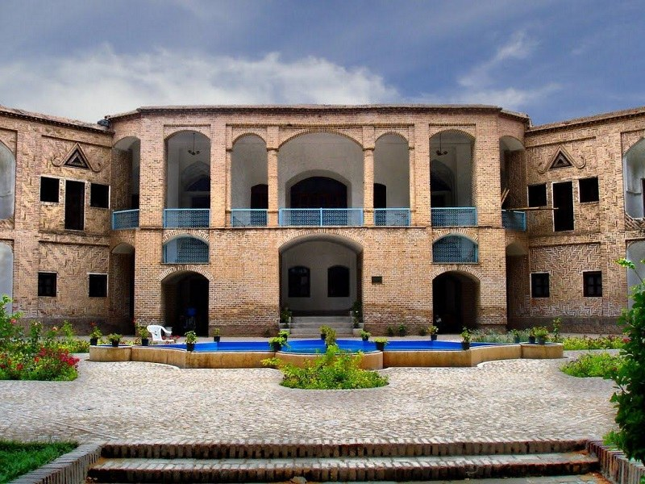
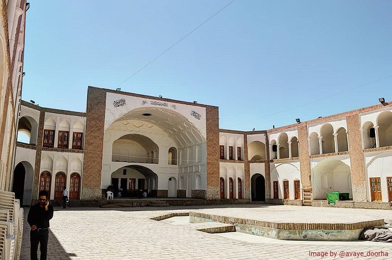
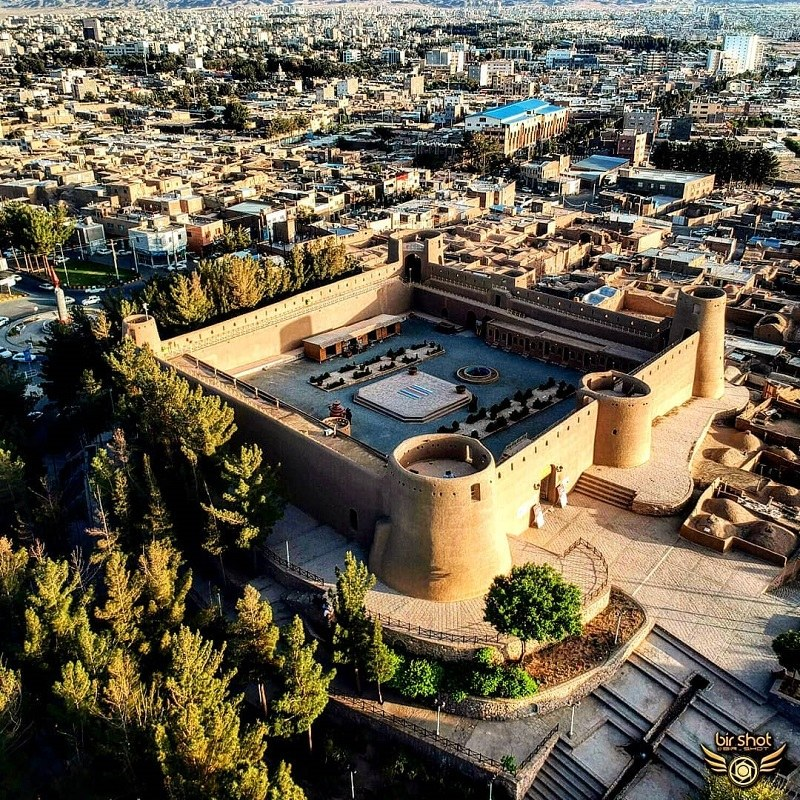
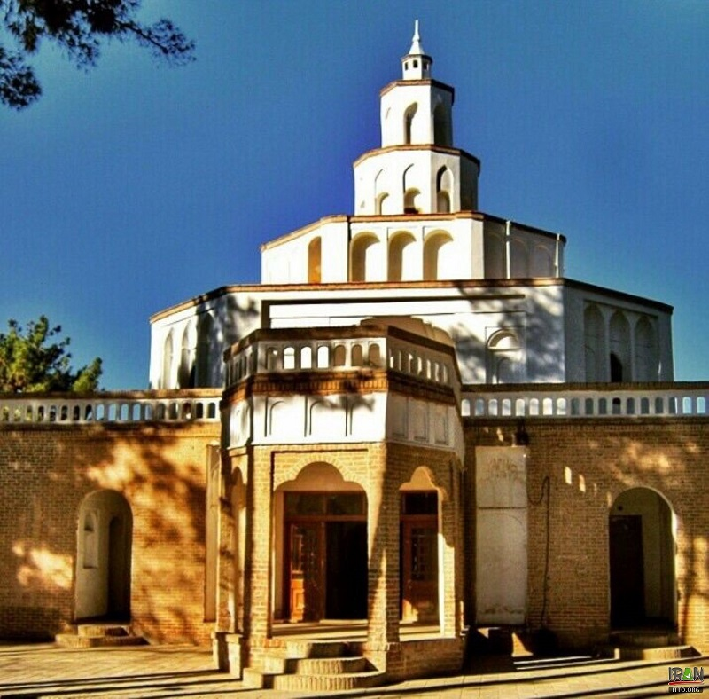
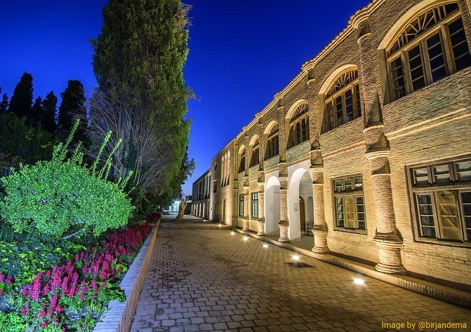
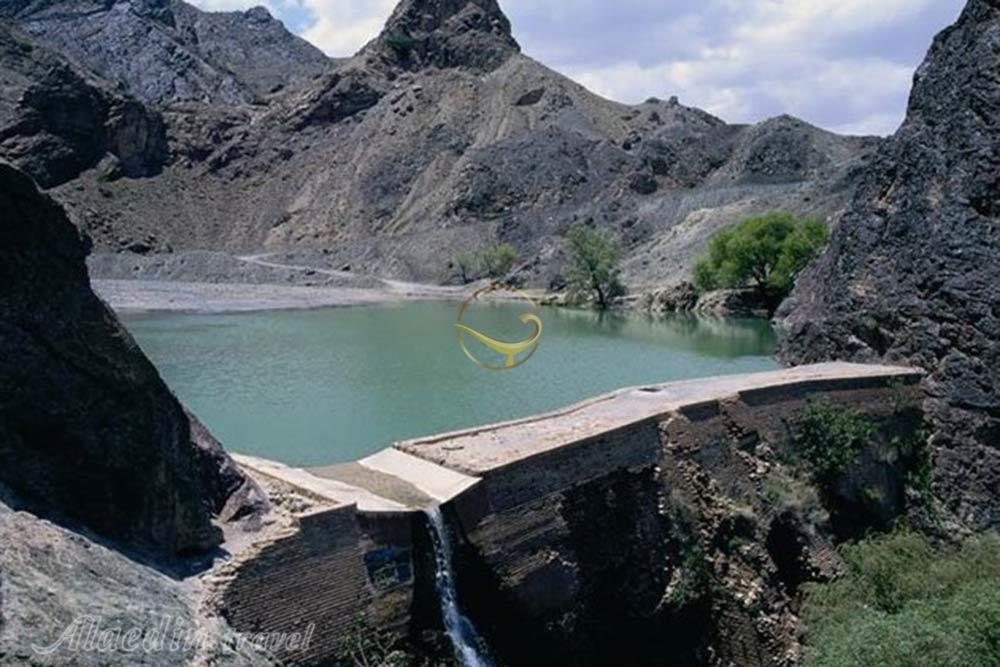

UNESCO has inscribed this complex as one of the Iranian Gardens in the World Heritage List.
The building and its area belong to the Qajar era constructed with the
architecture style of Iranian gardens including two mansions, a pool, and an enclosed garden within the city.
Some parts of Akbarieh Mansion have now changed to Anthropology and Archeology Museum where you can see very interesting fossils of this area.
2.Shokatieh School :

The construction of this building dates back to 1906. Initially, it began the activity with 7 Austrian teachers, some Iranian translators, and 40 students.
It is worth mentioning that this school was the third school in Iran with modern teaching methods after Dar ul-Funun of Tehran and Roshdiyeh of Tabriz.
3.Historical Castle of Birjand

This defensive complex is a historical attraction located on a mound overlooking the urban area of the city.
people believe that there is a tunnel reaching into the castle through some houses. In the past, this tunnel was a way to transfer people to the castle for shelter in an emergency.

This citadel was the governor’s seat built at the end of the Zandieh period. In terms of architectural form, the monument is generally different from other urban buildings.
This citadel has a hexagonal shape and at the top, it has a cone-shaped and white color. Kolah Farangi Citadel has beautiful decorations and Muqarnas.
5.Rahim Abad Garden and Mansion

This historic complex includes fencing, watchtowers, garden, main mansion, pond, pavilion, stables, and service spaces.
The garden represents the Iranian garden style. In addition, the building dates back at least to the Zandieh era. In the center of the garden,
the architects built a mansion with architectural features of the late Qajar and early Pahlavi architectural style.
6.Band Darreh Lake and Dam

Band Darre Dam is a huge building of stone, brick and mortar of Sarooj which was built on the flood route in Bagheran Mountains.
This dam is the most important historical site in Birjand. The dam formed small lakes that could be used as a vacation spot.
The dam construction has been formed from grooves on the sedimentary floors of the river bed.In addition to the large diameter of the wall
that increased its strength, the architect used two tricks to enhance the wall's strength.First the construction of two bays with a width of
about 1.80 meters and a rise of about five meters, will increase the strength of the wall.These two trailers are located on both sides of the
emergency evacuation channel.